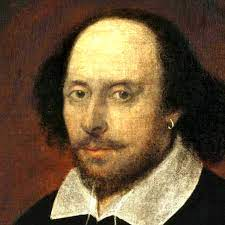

William Shakespeare (1564-1616) foi um poeta e
dramaturgo inglês muito importante do século XVI e XVII.
Suas obras são consideradas clássicas por diversos especialistas ao redor do mundo,
sendo muita das vezes
estudadas por conterem temas profundos e poéticos. Shakespeare teve papel fundamental
como ator e escritor na Inglaterra, tendo suas obras de teatro adaptadas para
literatura também.
Nascido no dia 23 de abril de 1564, em
Stratford-upon-Avon, no condado de Warwick, Inglaterra, Shakespeare casou-se cedo, aos
18 anos com Anne Hathaway. Cinco meses depois nasceu a primeira filha, Susan
e em seguida gêmeos, Judith e Hamnet.
Nessa época Shakespeare já se interessava pela arte,
escrevendo versos e assistindo companhias de teatro. Tendo se mudado para Londres, trabalhou
como guardador de cavalos na porta do teatro de James Burbage, o que não tardou sua participação
nos bastidores.
Em 1589 já se tornara copista oficial da companhia. Adaptava e
escrevia diversas peças, além de representar pequenos papéis. Sua obra contempla 27 peças teatrais,
2 longos poemas e 154 sonetos.